Home / Past papers / MLT End Term / this paper
Machine Learning Techniques 18 Dec 25 - 21 Dec 2025
Elapsed 00:00
For the polynomial kernel  the explicit feature map for the vector
the explicit feature map for the vector  is 10-dimensional. Which of the following options is the correct transformed feature vector
is 10-dimensional. Which of the following options is the correct transformed feature vector  ?
?
the explicit feature map for the vector is 10-dimensional. Which of the following options is the correct transformed feature vector ?


A centered dataset in
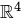
is projected onto its first two principal components. The first and the second principal components are respectively.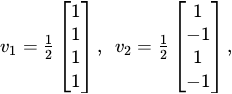
Then, which of the following vectors could be a valid third principal component?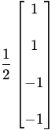
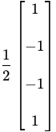
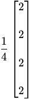
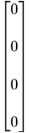
Comprehension passage - the questions below it refer to this
Consider the following points on the real line: 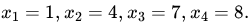
We run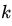
-means algorithm with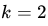
. The initial cluster centers are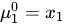
and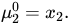
Based on the above data, answer the given subquestions.What will be the cluster means after iteration 1?
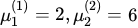
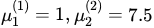
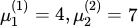
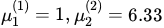
Find the value of the objective function
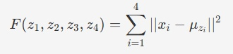
after convergence. Enter the answer correct to two decimal places.Suppose we have a
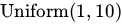
prior for the parameter . Then, the value of the maximum likelihood estimate (MLE) is equal to the value of the maximum a posteriori (MAP) estimate.- True
- False
Consider the following training dataset for a binary classification problem:
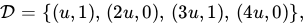
where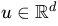
is a fixed nonzero constant and labels belong to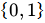
. Let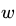
be the weight vector of a linear classifier. What condition should the weight vector satisfy for the 0-1 loss to be zero on this dataset?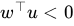
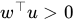
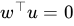
- No such weight vector exists.
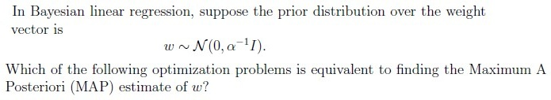
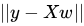
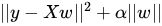
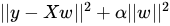
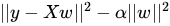
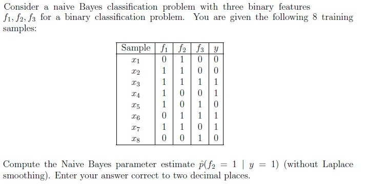
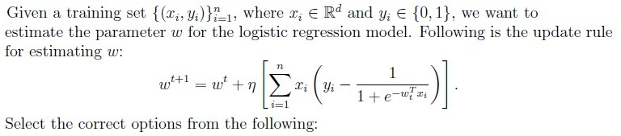
- If
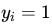
, and is close to 1, then such points will not contribute much to the update of .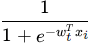
- If , and is close to 0, then such points will not contribute much to the update of .
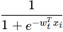
- If
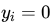
, and is close to 1, then such points will not contribute much to the update of .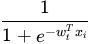
- If , and is close to 0, then such points will not contribute much to the update of .
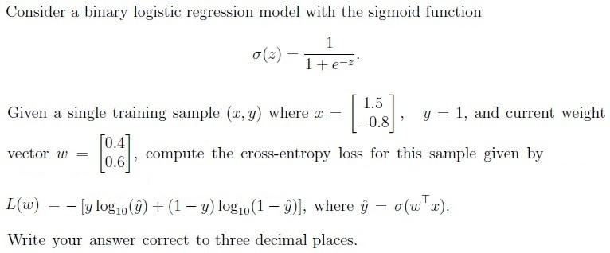
Consider an SVM classifier with separating hyperplane defined by
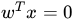
, where the weight vector is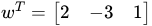
. Compute the perpendicular distance from the point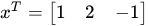
to the hyperplane. Enter your answer correct to three decimal places.Consider two datasets
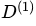
and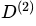
where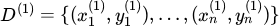
and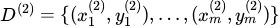
such that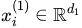
and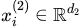
, where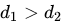
and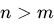
. The maximum number of mistakes made by the perceptron algorithm is higher on dataset than on dataset .- True
- False
In a random forest classifier with total features, each split is chosen by evaluating a randomly selected subset of
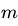
features. Consider how changing affects the behavior of the forest. Which of the following statements are correct?- Increasing reduces the correlation between any two trees in the forest.
- Decreasing reduces the correlation between any two trees in the forest.
- If is too small, individual trees may underfit the data.
- Increasing always decreases the variance of the random forest model.
- Decreasing makes trees more similar to each other.
Comprehension passage - the questions below it refer to this
Based on the above data, answer the given subquestions.

For input  , compute the the regression output
, compute the the regression output  . Enter the answer correct to one decimal place.
. Enter the answer correct to one decimal place.
, compute the the regression output . Enter the answer correct to one decimal place.Suppose the target value for this input is
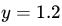
. Compute the squared loss . Enter the answer correct to two decimal places.Comprehension passage - the questions below it refer to this
Consider the following one-dimensional dataset with binary labels .
AdaBoost uses decision stumps as weak learners. Assume the initial distribution of the dataset assigns equal weights to all data points, i.e.,
, for . At iteration , AdaBoost chooses the decision stump
Based on the above data, answer the given subquestions.Which point will be misclassified by the first decision stump?
- Points 4
- Points 5
- Points 3
- Points 1
After AdaBoost updates the sample weights for iteration , which pair of points will have the smallest (and equal) weights while training the second stump ?
- Points 1 and 2
- Points 3 and 4
- Points 3 and 5
- Points 1 and 5
Answer key
- Q1 (MCQ, 3 marks): B
- Q2 (MSQ, 3 marks): A, B
- Q3 (MCQ, 2 marks): D
- Q4 (SA, 3 marks): 8.63 to 8.68
- Q5 (MCQ, 2 marks): A
- Q6 (MCQ, 2 marks): D
- Q7 (MCQ, 2 marks): C
- Q8 (SA, 3 marks): 0.75
- Q9 (MSQ, 3 marks): A, D
- Q10 (SA, 4 marks): 0.273 to 0.279
- Q11 (SA, 4 marks): 1.333 to 1.339
- Q12 (MCQ, 3 marks): B
- Q13 (MSQ, 3 marks): B, C
- Q14 (SA, 4 marks): 0.1
- Q15 (SA, 3 marks): 1.19 to 1.23
- Q16 (MCQ, 2 marks): B
- Q17 (MSQ, 4 marks): A, B